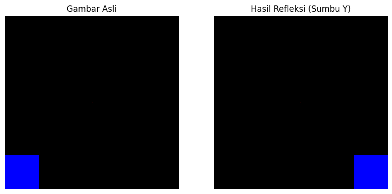
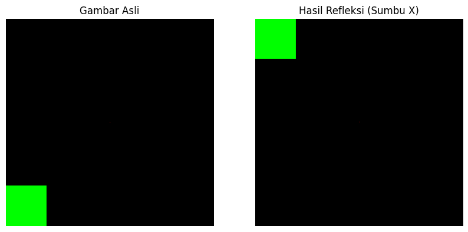

Transformasi Linier#
Defini Transformasi#
Fungsi f dari himpunan X ke himpunan Y terdapat aturan yang menetapkan setiap elemen Y ke setiap elemen X. Misalkan himpunan X dan Y keduanya merupakan himpunan semua vektor dalam ruang, dapat menyatakan sebagai suatu transformasi.
Transformasi adalah pemetaan T dari ruang vektor V ke ruang vektor W .
v ∈ −−−−−Transformation−−−−→ w = T (v) ∈ W
import numpy as np
# Definisikan matriks A
A = np.array([[1, 0, 0],
[0, 1, 0],
[0, 0, 0]])
# Fungsi transformasi linier
def linear_transformation(x):
return np.dot(A, x)
# Contoh vektor input
x = np.array([2, 3, 1])
# Hitung hasil transformasi
result = linear_transformation(x)
print("Hasil transformasi:", result)
Hasil transformasi: [2 3 0]
Cara Menentukan Transformasi Linier#
Dua aturan:
• Pusat titik tidak berubah.
• Garis lurus ditetapkan sebagai garis lurus.
Secara umum pemetaan T adalah transformasi linier jika :
1. T (u + v) = T (u) + T (v)#
import numpy as np
# Definisikan matriks transformasi T
T = np.array([[2, 1],
[1, 3]])
# Fungsi untuk transformasi linier
def linear_transformation(T, u, v):
# Menghitung T(u + v)
Tu_plus_v = np.dot(T, u + v)
# Menghitung T(u) + T(v)
Tu_plus_Tv = np.dot(T, u) + np.dot(T, v)
# Memeriksa apakah T(u + v) sama dengan T(u) + T(v)
if np.array_equal(Tu_plus_v, Tu_plus_Tv):
print("Transformasi linier memenuhi sifat T(u + v) = T(u) + T(v)")
else:
print("Transformasi linier tidak memenuhi sifat T(u + v) = T(u) + T(v)")
return Tu_plus_v, Tu_plus_Tv
# Contoh vektor u dan v
u = np.array([1, 2])
v = np.array([3, 4])
# Panggil fungsi dan cetak hasilnya
Tu_plus_v, Tu_plus_Tv = linear_transformation(T, u, v)
print("T(u + v):", Tu_plus_v)
print("T(u) + T(v):", Tu_plus_Tv)
Transformasi linier memenuhi sifat T(u + v) = T(u) + T(v)
T(u + v): [14 22]
T(u) + T(v): [14 22]
2. T (αv) = αT (v)#
import numpy as np
# Definisikan matriks transformasi T
T = np.array([[1, 2],
[3, 4]])
# Fungsi untuk transformasi linier
def linear_transformation(T, v):
return np.dot(T, v)
# Contoh vektor v dan skalar alpha
v = np.array([5, 6])
alpha = 3
# Hitung T(alpha * v)
T_alpha_v = linear_transformation(T, alpha * v)
# Hitung alpha * T(v)
alpha_T_v = alpha * linear_transformation(T, v)
# Memeriksa apakah T(alpha * v) sama dengan alpha * T(v)
if np.array_equal(T_alpha_v, alpha_T_v):
print("Transformasi linier memenuhi sifat T(alpha * v) = alpha * T(v)")
else:
print("Transformasi linier tidak memenuhi sifat T(alpha * v) = alpha * T(v)")
print("T(alpha * v):", T_alpha_v)
print("alpha * T(v):", alpha_T_v)
Transformasi linier memenuhi sifat T(alpha * v) = alpha * T(v)
T(alpha * v): [ 51 117]
alpha * T(v): [ 51 117]
Refleksi Matriks#
Refleksi terhadap sumbu y#
import numpy as np
# Membuat matriks 2x2 dengan nilai awal
matriks = np.array([[1, 0], [0, 1]])
# Melakukan cermin pada sumbu y dengan mengalikan kolom pertama dengan -1
matriks[:, 0] = matriks[:, 0] * -1
# Menampilkan matriks setelah transformasi cermin
print("Matriks setelah transformasi cermin pada sumbu y:")
print(matriks)
Matriks setelah transformasi cermin pada sumbu y:
[[-1 0]
[ 0 1]]
import numpy as np
import matplotlib.pyplot as plt
# Membuat gambar dengan titik merah di tengah
image = np.zeros((512, 512, 3), dtype=np.uint8)
image[256, 256] = [255, 0, 0] # Titik merah di tengah gambar
# Menerapkan refleksi terhadap sumbu y
reflected_image = image[:, ::-1]
# Menambahkan warna pada gambar refleksi
# Misalnya, kita akan menambahkan warna biru pada sudut kanan bawah
reflected_image[-100:, -100:] = [0, 0, 255] # Warna biru
# Menampilkan gambar semula dan hasil refleksinya
plt.figure(figsize=(10, 5))
# Gambar asli
plt.subplot(1, 2, 1)
plt.imshow(image)
plt.title("Gambar Asli")
plt.axis('off')
# Gambar hasil refleksi
plt.subplot(1, 2, 2)
plt.imshow(reflected_image)
plt.title("Hasil Refleksi (Sumbu Y)")
plt.axis('off')
plt.show()

Refleksi terhadap sumbu x#
import numpy as np
# Membuat matriks 2x2 dengan nilai awal
matriks = np.array([[1, 0], [0, 1]])
# Melakukan cermin pada sumbu x dengan mengalikan baris kedua dengan -1
matriks[1, :] = matriks[1, :] * -1
# Menampilkan matriks setelah transformasi cermin
print("Matriks setelah transformasi cermin pada sumbu x:")
print(matriks)
Matriks setelah transformasi cermin pada sumbu x:
[[ 1 0]
[ 0 -1]]
import numpy as np
import matplotlib.pyplot as plt
# Membuat gambar dengan titik merah di tengah
image = np.zeros((512, 512, 3), dtype=np.uint8)
image[256, 256] = [255, 0, 0] # Titik merah di tengah gambar
# Menerapkan refleksi terhadap sumbu x
reflected_image = np.flipud(image)
# Menambahkan warna pada gambar refleksi
# Misalnya, kita akan menambahkan warna hijau pada sudut kiri atas
reflected_image[:100, :100] = [0, 255, 0] # Warna hijau
# Menampilkan gambar semula dan hasil refleksinya
plt.figure(figsize=(10, 5))
# Gambar asli
plt.subplot(1, 2, 1)
plt.imshow(image)
plt.title("Gambar Asli")
plt.axis('off')
# Gambar hasil refleksi
plt.subplot(1, 2, 2)
plt.imshow(reflected_image)
plt.title("Hasil Refleksi (Sumbu X)")
plt.axis('off')
plt.show()

Rotasi Matriks#
import numpy as np
# Membuat matriks 2x2 dengan nilai awal
matriks = np.array([[1, 0], [0, 1]])
# Mendefinisikan matriks rotasi untuk rotasi 90 derajat searah jarum jam
theta = np.radians(90) # Mengubah derajat menjadi radian
rotasi_matriks = np.array([[np.cos(theta), -np.sin(theta)],
[np.sin(theta), np.cos(theta)]])
# Melakukan rotasi matriks
matriks_rotasi = np.dot(rotasi_matriks, matriks)
# Menampilkan matriks setelah rotasi
print("Matriks setelah rotasi 90 derajat searah jarum jam:")
print(matriks_rotasi.round())
Matriks setelah rotasi 90 derajat searah jarum jam:
[[ 0. -1.]
[ 1. 0.]]
import numpy as np
# Membuat matriks 2x2 dengan nilai awal
matriks = np.array([[1, 0], [0, 1]])
# Melakukan rotasi 90 derajat berlawanan arah jarum jam
matriks_rotasi = np.rot90(matriks)
# Menampilkan matriks setelah rotasi
print("Matriks setelah rotasi 90 derajat berlawanan arah jarum jam:")
print(matriks_rotasi)
Matriks setelah rotasi 90 derajat berlawanan arah jarum jam:
[[0 1]
[1 0]]
Translasi Matriks#
import numpy as np
# Fungsi untuk membuat matriks translasi 2D
def create_translation_matrix(tx, ty):
return np.array([[1, 0, tx],
[0, 1, ty],
[0, 0, 1]])
# Menerapkan translasi pada titik (x, y)
def translate_point(x, y, tx, ty):
point = np.array([x, y, 1])
translation_matrix = create_translation_matrix(tx, ty)
translated_point = np.dot(translation_matrix, point)
return translated_point[:2]
# Contoh penggunaan
tx, ty = 1, 1 # Nilai translasi yang diinginkan
x, y = 0, 0 # Koordinat titik awal
# Menerjemahkan titik
translated_point = translate_point(x, y, tx, ty)
print("Titik setelah translasi:", translated_point)
Titik setelah translasi: [1 1]